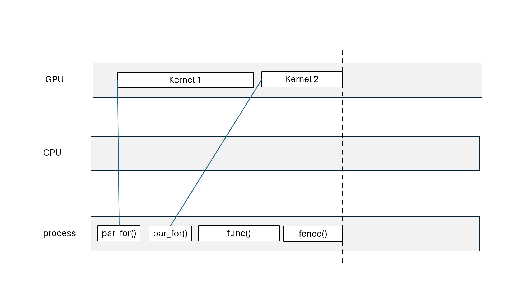
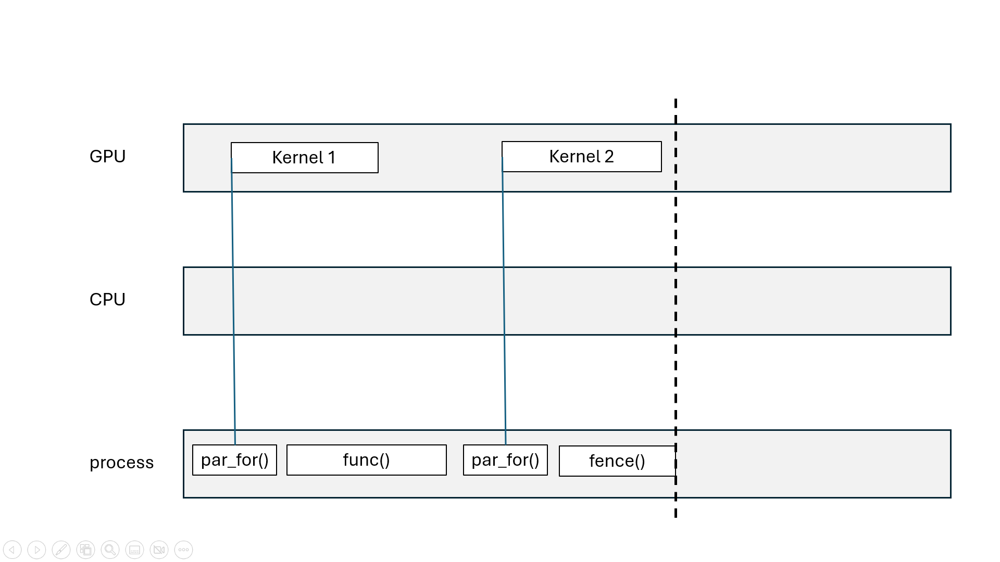
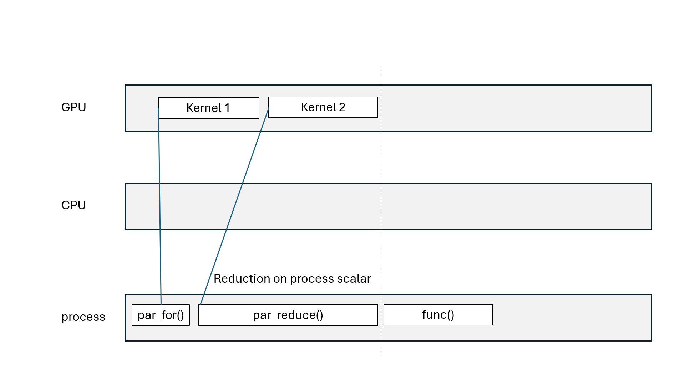
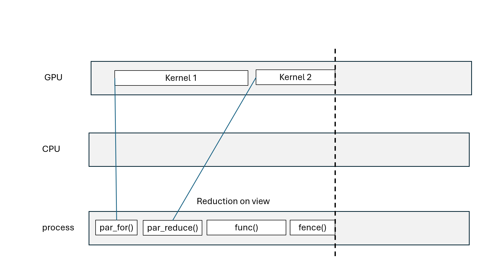
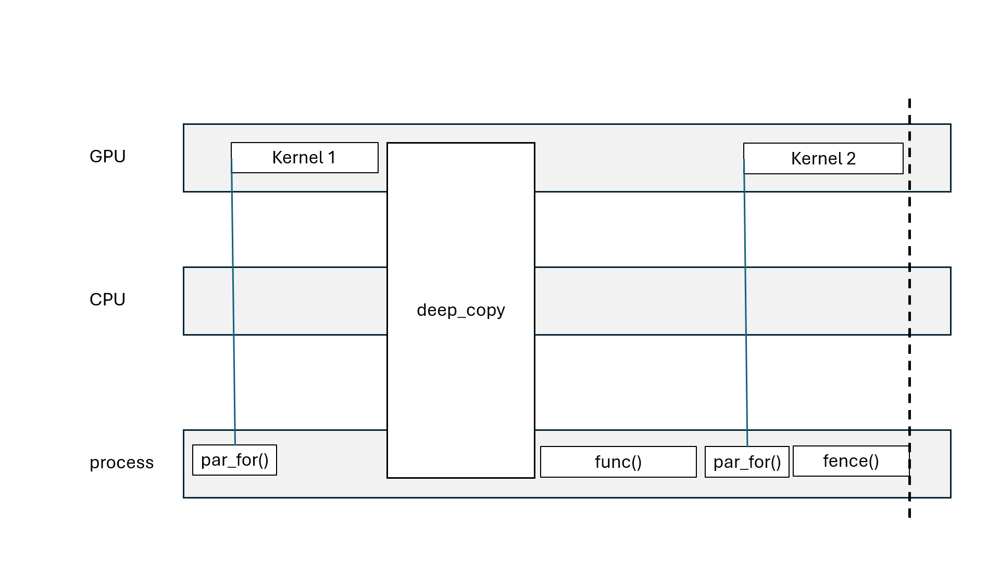
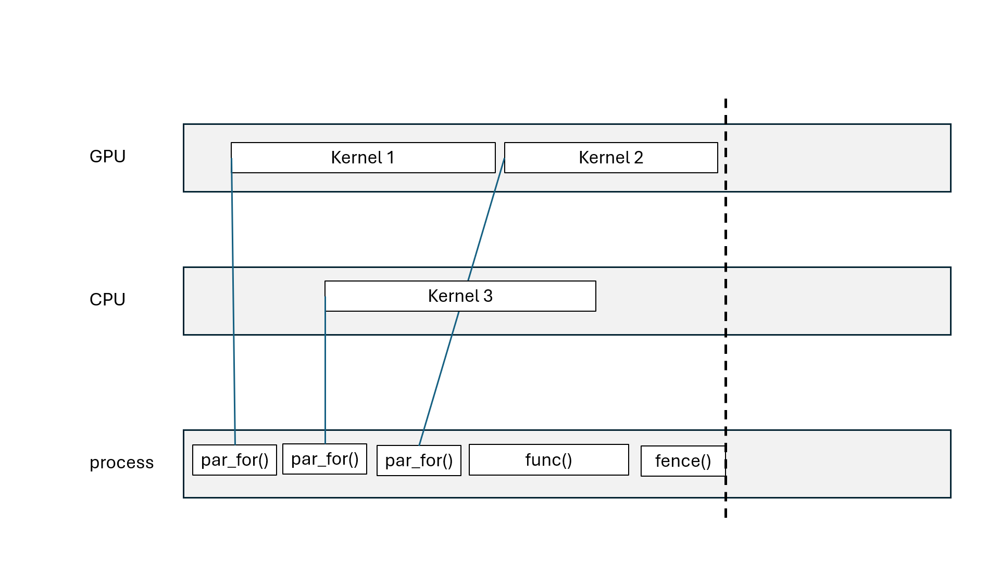
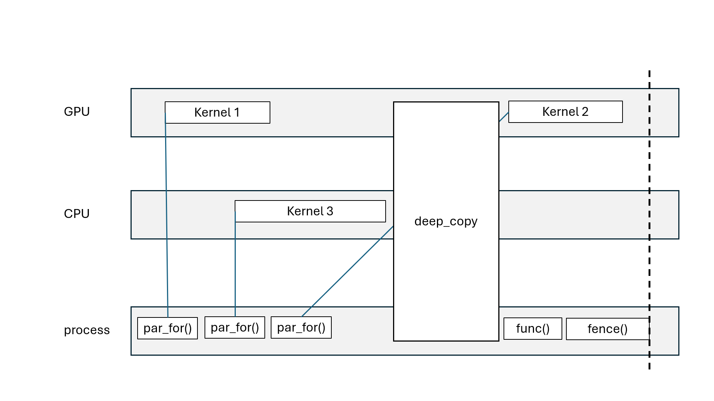
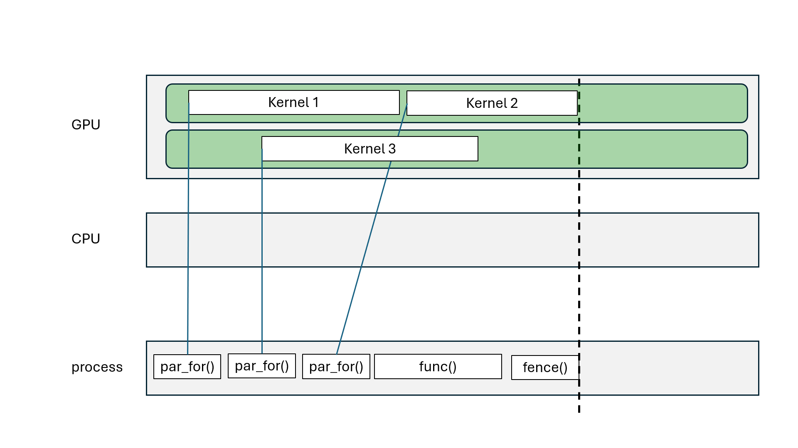
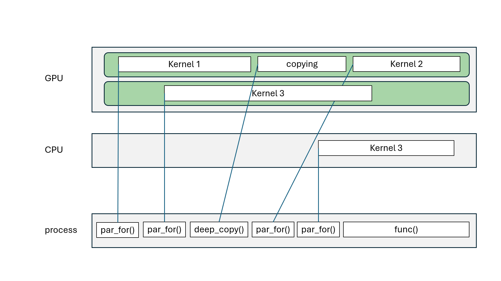

Main concepts
- Memory spaces: place your data
- Execution spaces: execute your code
- Execution pattern: parallel constructs
GPUs can offer significant speedup
But:
Motivation
Kokkos::initialize(...)
Kokkos::finalize()
15: number of iterations, lambda function to execute
i: iteration-number from 0 to 14
View = \(N\)-dimensional arrays
int, float, double,…)struct of basic typesViews can be accessed using operator() with indices
Kokkos::HostSpace on hostKokkos::CudaSpace on CUDA deviceKokkos::CudaUVMSpace in CUDA UVM (Unified Virtual Memory)Kokkos::HipSpace on HIP deviceWarning
Can only be accessed in execution space associated with memory space
Two main memory layouts
Kokkos::LayoutLeft = column-majorKokkos::LayoutRight = row-majorExample:
Default “best” for memory space, parallel access over leftmost index
Warning
Kokkos::deep_copy between different memory spaces may not work for non-contiguous data, e.g., subviews
Required for, e.g.,
Takes care of layout differences
Kokkos::RandomAccess = random access to view’s elements
const and CudaSpace, use texture memory/fetchKokkos::Atomic = all operations on view’s elements are atomic|a_atomic are atomic
Parallel reduce:
Kokkos::RangePolicy = range of indices
Both can be defined with chunk size
Kokkos::Cuda = parallel execution on CUDA deviceKokkos::Hip = parallel execution on HIP deviceKokkos::OpenMP = parallel execution on hostKokkos::Serial = serial execution on hostDefault execution space: highest enabled at compile time
Kokkos::DefaultExecutionSpace = default execution spaceKokkos::DefaultHostExecutionSpace = default host execution spaceoperator() that does the work, cfr. lambda function
a to be used multiple times
b and use it directly
struct MyReduceFunctor {
private:
Kokkos::View<double*> a_;
public:
explicit MyReduceFunctor(Kokkos::View<double*> a_) : a(a_) {}
KOKKOS_INLINE_FUNCTION
void operator()(const int i, double& sum) const {
sum += a(i);
}
KOKKOS_INLINE_FUNCTION
void join(double& dst, const double& src) const {
dst += src;
}
};operator() with accumulator
join() to combine partial results
Kokkos::parallel_for, Kokkos::parallel_scan: asynchronous (non-blocking)Kokkos::parallel_reduce: asynchronous with Kokkos::View, blocking with scalarKokkos::deep_copy(dest, src): blocking copyKokkos::deep_copy(exec_space, dest, src): inserted in FIFO queueKokkos::fence() = wait for all parallel operations to finishexec_space.fence() = wait for all parallel operations on exec_space to finish


Kokkos::View





Kokkos::deep_copy(dest, src) blcoks all execution spacesKokkos::fence() blocks all execution spacesKokkos::parallel_reduce with scalar blocks processKokkos::View that goes out of scope may blockKokkos::OpenMP may blockKokkos::OpenMP execution spaceChallenge: how to divide the work?
Kokkos::TeamPolicy
Kokkos::TeamThread::fence()TeamPolicyTeamThreadRange, TeamThreadMDRange
ThreadVectorRange, ThreadVectorMDRangeTeamVectorRange, TeamVectorMDRangeWhere \(\vec{y} \in \mathbb{R}^M\), \(A \in \mathbb{R}^{M \times N}\), \(\vec{x} \in \mathbb{R}^N\)
Better performance for \(M \ll N\)
Where \(s \in \mathbb{R}\), \(\vec{y} \in \mathbb{R}^M\), \(A \in \mathbb{R}^{M \times N}\), \(\vec{x} \in \mathbb{R}^N\)
using policy_t = Kokkos::TeamPolicy<>;
float s {0.0f};
Kokkos::parallel_reduce("y*A*x", policy_t(M, Kokkos::AUTO),
KOKKOS_LAMBDA(const policy_t::member_type& team_member, float& sum) {
const int i {team_member.league_rank()};
float row_sum {0.0f};
Kokkos::parallel_reduce(
Kokkos::TeamThreadRange(team_member, N),
[=] (const int j, float& row_sum) {
row_sum += A(i, j)*x(j);
}, row_sum);
Kokkos::single(Kokkos::PerTeam(team_member),
[&]() { result += y(i)*row_sum; });
}, s);TeamPolicyVectorTeamPolicyKokkos::View<double***> A("A", nr_elements, nr_qp, vector_size);
Kokkos::View<double**> B("B", nr_elements, vector_size);
Kokkos::View<double**> C("C", nr_elements, nr_qp);
Kokkos::parallel_for(
"C=A*B", Kokkos::TeamPolicy<>(nr_elements, Kokkos::AUTO),
KOKKOS_LAMBDA(const Kokkos::TeamPolicy<>::member_type& team) {
const int element{team.league_rank()};
Kokkos::parallel_for(Kokkos::TeamThreadRange(team, nr_qp),
[&](const int& qp) {
double total{0.0};
for (int i = 0; i < vector_size; ++i) {
total += A(element, qp, i) * B(element, i);
}
C(element, qp) = total;
});
});B(element, :)
vector_size values of type double
Note
Required to ensure alignment taken into account!
TeamPolicy to use
Kokkos::PerTeam and/or Kokkos::PerThreadKokkos::parallel_for(
policy.set_scratch_size(level, Kokkos::PerTeam(scratch_size)),
KOKKOS_LAMBDA(const Kokkos::TeamPolicy<>::member_type& team) {
const int element{team.league_rank()};
ScratchView scratch(team.team_scratch(level), vector_size);
Kokkos::parallel_for(
Kokkos::TeamVectorRange(team, vector_size),
[&](const int& i) { scratch(i) = B(element, i); });
team.team_barrier();
...B in parallel
scratch is fully initialized
Warning
Kokkos::parallel_for can run asynchronously, threads will not synchronize
Kokkos::parallel_for(
"C=A*B", policy.set_scratch_size(level, Kokkos::PerTeam(scratch_size)),
KOKKOS_LAMBDA(const Kokkos::TeamPolicy<>::member_type& team) {
const int element{team.league_rank()};
ScratchView scratch(team.team_scratch(level), vector_size);
Kokkos::parallel_for(
Kokkos::TeamVectorRange(team, vector_size),
[&](const int& i) { scratch(i) = B(element, i); });
team.team_barrier();
Kokkos::parallel_for(Kokkos::TeamThreadRange(team, nr_qp),
[&](const int& qp) {
double total{0.0};
for (int i = 0; i < vector_size; ++i) {
total += A(element, qp, i) * scratch(i);
}
C(element, qp) = total;
});
});scratch
All threads in team use per team scratch
Warning
Experimental features!
#include <Kokkos_Random.hpp>
...
Kokkos::Random_XorShift64_Pool<Kokkos::DefaultExecutionSpace> random_pool(seed);
...
Kokkos::parallel_for("walks", nr_walks, KOKKOS_LAMBDA(const int walk) {
auto generator = random_pool.get_state();
int pos = max_steps;
for (int step = 0; step < (walk % 2 == 0 ? max_steps : max_steps - 1);
++step) {
pos += generator.drand() < 0.5 ? -1 : 1;
}
distance_atomic(pos)++;
});seed
Note
Separate download/installation